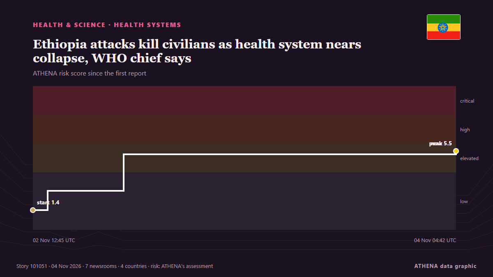

Системы здравоохранения
СпонсорПри поддержке  Cybernetics and Artificial Intelligence Lab Welcome to the Cybernetics and Artificial Intelligence Laboratory, established at the Department of Business Administration of the National and Kapodistrian University of Athens. The lab is headed by Professor Dimitrios Thomakos. The lab aims to do research that can be published in top venues. Our research uses tools and methods of Artificial Intelligence, and lies in the following areas: - Forecasting - Decision making - Cyber security - Finance We are always looking forward to collaborating with exceptional students!
Cybernetics and Artificial Intelligence Lab Welcome to the Cybernetics and Artificial Intelligence Laboratory, established at the Department of Business Administration of the National and Kapodistrian University of Athens. The lab is headed by Professor Dimitrios Thomakos. The lab aims to do research that can be published in top venues. Our research uses tools and methods of Artificial Intelligence, and lies in the following areas: - Forecasting - Decision making - Cyber security - Finance We are always looking forward to collaborating with exceptional students!
| 22 окт. | 0 |
|---|---|
| 23 окт. | 0 |
| 24 окт. | 0 |
| 25 окт. | 0 |
| 26 окт. | 0 |
| 27 окт. | 0 |
| 28 окт. | 0 |
| 29 окт. | 2 |
| 30 окт. | 2 |
| 31 окт. | 3 |
| 1 нояб. | 1 |
| 2 нояб. | 8 |
| 3 нояб. | 0 |
| 4 нояб. | 0 |
Заголовки приводятся на английском языке, как они были опубликованы.

Ethiopia attacks kill civilians as health system nears collapse, WHO chief says
The World Health Organization reports that attacks in northern Ethiopia are pushing the region's fragile health system closer to collapse. из ABC News (International)
Medicare Open Enrollment Ends Dec. 7: Give Your Plan a Check-up
The ACA health insurance marketplaces — find yours at HealthCare.gov — open Nov. из NPR
Doctor in Germany on trial over sex abuse of over 70 children
The doctor was arrested roughly a year ago after the mother of a child reported suspected abuse to authorities. из IOL
Colombia Offers 120 Healthcare Jobs in Spain With Permanent Contracts
Colombia has opened 120 healthcare jobs in Spain for doctors and nurses, offering permanent contracts and monthly salaries equivalent to approximately 8 million to 12 million pesos… из Colombia One
Health insurance plan costs on Healthcare.gov to rise by double digits in 2027
Obamacare enrollees could see their health insurance premiums rise by double digits for a second year in a row, according to a report published Friday. из The Hill
Ex-MP Amrin Amin's foodpanda delivery rider outfit for Halloween sparks debate
Tone deaf? Or like dressing up as a nurse or doctor or cop? из Mothership
More than 1,500 people awaiting organ donation in Azerbaijan
Thessaloniki's George Papanikolaou Hospital ranks first in Northern Greece for organ donation as doctors highlight the process and its life-saving impact. из Greek City Times
California doctor gets 15 years for $45m Medicare fraud using fake Botox claims
California doctor Violetta Mailyan has been sentenced to 15 years in federal prison for defrauding Medicare of more than $45 million through fake Botox injection claims. из Times of India
Chong Wei: Making tough decisions for Malaysian badminton comes with criticism
KUALA LUMPUR: Former world number one Lee Chong Wei is prepared to face public criticism as he navigates the challenges of driving change in Malaysian badminton, insisting that difficult decisions… из New Straits Times
Halloween chaos in Lancashire as three children arrested and one in hospital after illegal party
Over 200 children attended the party in Lancashire. из Manchester Evening News
Mata Ayer assemblyman Wan Badariah dies at 50
KANGAR: Mata Ayer assemblyman Wan Badariah Wan Saad has died. из New Straits Times